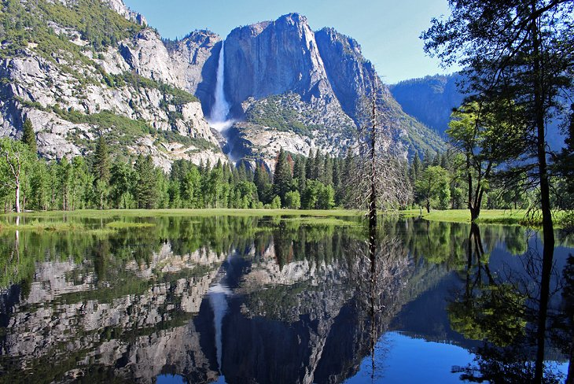

Welcome ,To USA Attractions
We Will Recommend What To Do In United State of America
To More Information Press Hereconstituent state of the United States of America, one of the 13 original colonies and statesNew York is bounded to the west and north by Lake Erie.

New York City is like no other city in the world, and one that must be experienced to be fully appreciated. For first-time visitors, walking the streets can be like walking through a movie set, with famous sites at every turn, from the Empire State Building, to Rockefeller Plaza, the Chrysler Building, Central Park, The High Line, Times Square, 5th Avenue, Broadway, and of course, the Statue of Liberty.
New York
San Francisco, city and port, coextensive with San Francisco county, northern California, U.S., located on a peninsula between the Pacific Ocean and San Francisco Bay

This charming and picturesque West Coast city is the perfect getaway destination for couples, singles, or families. Famous sites, charming streets, beautiful views, and outdoor dining are all part of what makes San Francisco such a great place to visit.
Take a cruise on San Francisco Bay, tour Alcatraz, drive over the Golden Gate Bridge, wander around Fisherman's Wharf, or hop on a street car to explore the city sites.
Summer or fall is a wonderful time to visit, but the climate here is mild and any time of year is pleasant
.San Francisco
is bigger than the state of Rhode Island. The Grand Canyon is a mile deep, 277 miles long and 18 miles wide. While the park doesn't include the entire canyon, it does measure in at a whopping 1,904 square miles in total

The Grand Canyon is one of those must-see, bucket-list destinations that have been attracting visitors for generations. Gazing out over the canyon walls to an endless horizon and an unfathomable depth below is one of the highlights of any trip in the United States.
Visiting the Grand Canyon can easily be done on a day trip from Las Vegas or Phoenix, and from some smaller cities in the vicinity, including Sedona or Flagstaff. Another option is to incorporate a visit into a larger driving trip through Arizona and surrounding states. A train trip from Williams, AZ is another delightful way to experience the canyon.
The south rim of the Grand Canyon, which is the most popular and most visited section
The Grand Canyon
Waikiki is most famous for Waikiki Beach, which is one of six beaches in the district, along with Queen's Beach, Kuhio Beach, Gray's Beach, Fort DeRussy Beach and Kahanamoku Beach. Waikiki Beach is almost entirely man-mad.

Waikiki is one of America's top beaching destinations, with all the comforts of North America on a beautiful tropical island in the Pacific Ocean. Located on the Hawaiian island of Oahu, Waikiki is a suburb of Honolulu known for the beautiful golden sand beach that stretches along the oceanfront, backed by hotels and retail establishments.
Rent a surfboard and test your skills in the waves, hit the shops when you're done with the beach, and enjoy great dining options in the evening.
Waikiki
Miami, city, seat (1844) of Miami-Dade county, southeastern Florida, U.S. A major transportation and business hub, Miami is a leading resort and Atlantic Ocean port situated on Biscayne Bay at the mouth of the Miami River

The hot spot of southern Florida, Miami is more than just a great beaching destination. Wonderful beaches can be found all over Florida, but Miami offers an atmosphere like no other city in the state.
The Cuban vibe along Calle Ocho in Little Havana, the Art Deco District in Miami Beach that calls to mind the 1930s era, the endless parade of sports cars cruising along Ocean Drive in the evenings, and the summertime beach scene of South Beach.
Miami
Phoenix, city, seat (1871) of Maricopa county and capital of Arizona, U.S. It lies along the Salt River in the south-central part of the state, about 120 miles (190 km) north of the Mexico border and midway between El Paso, Texas
In the heart of the Southwestern US, Phoenix is a huge, sprawling city that attracts large numbers of northerners during the winter months, who come here to escape the cold weather. Phoenix is a great destination for golfing, shopping, relaxing, and generally having a good timeThe greater Phoenix area has some of the finest resorts in the state. They range from giant family-friendly complexes with beaches and waterslides to small, intimate operations where your every whim is indulged.
Phoenix
Yosemite National Park itself was discovered by European American settlers in 1851. There are earlier instances of other travelers entering the Valley but James D. Savage is accredited with discovering the area that is now known as Yosemite National Park
While the Grand Canyon is on most international travelers' itineraries, Yosemite is a national treasure that should not be missed. Yosemite Valley is home to some of America's most famous landscapes and iconic natural attractions, from the dramatic waterfalls to the soaring cliff walls of El Capitan and Half Dome.
The captivating photographs of Ansel Adams, the climbing community that has flocked here for decades, and the generations of families who have been coming to the park to camp
Yosemite National Park
apital of New Mexico, U.S. It lies at the foot of the Sangre de Cristo Mountains. Founded by the Spanish in 1610, it was the administrative, military, and missionary headquarters of a vast,sparsely populated Spanish colonial province during the 18th century.
A melting pot of Spanish, Native American, Mexican, and Anglo-Americans, Santa Fe has a unique vibe that, once experienced, tends to draw one back time and time again. This historical city's pleasant streets, lined by Spanish colonial churches, adobe homes, and towering trees, just beg to be photographed.
Be sure to visit the Plaza, the beating heart of all that's going on in town. Cute cafés, many with patios, line the square and make a perfect perch to do a bit of people watching. After you've had your fill of that.
Santa Fe